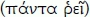
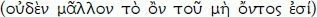

First subdivision of the Logic: The doctrine of being
§84
Being is the concept only as it is in itself. Its determinations have being, i.e. in their difference they are others opposite one another, and their further determination (the form of the dialectical) is a process of passing over into an other. This progressive determination is at once a matter of setting forth and thereby unfolding the concept, as it is in itself, and at the same time the process of being entering into itself, a deepening of it within itself. The explication of the concept in the sphere of being becomes the totality of being, precisely to the extent that the immediacy of being or the form of being as such is sublated in the process.
§85
Being itself as well as the subsequent determinations, not only those of being but also the logical determinations in general, can be regarded as the definitions of the absolute, as metaphysical definitions of God. More specifically, only the first simple determination within a given sphere, and then the third, which is the return from a difference to the simple relation to itself, can always be regarded in this way. For, to define God metaphysically means to express his nature in thoughts as such. But logic comprises all thoughts as they are while still in the form of thoughts. By contrast, the second determinations, making up a given sphere in its difference [Differenz], are the definitions of the finite. But if the form of definitions were used, this would entail envisaging a representational substratum. For even the absolute, what is supposed to express God in the sense and in the form of thought, remains merely an intended thought, i.e. a substratum that as such is indeterminate, relative to its predicate as the determinate and actual expression in thought. Because the thought, the basic matter solely at issue here, is contained only in the predicate, the form of a proposition, like that subject, is something completely superfluous (cf. § 31 and the chapter on the judgment below [§§ 166 et seq.]).
Addition. Each sphere of the logical idea proves to be a totality of determinations and a presentation of the absolute, and so too does being, which includes within itself the three stages of quality, quantity, and measure. Quality is, to begin with, the determinacy that is identical with being in the sense that something ceases to be what it is when it loses its quality. By contrast, quantity is the determinacy that is external to being and indifferent in relation to it. Thus, for instance, a house remains what it is, whether it is bigger or smaller, and red remains red, be it brighter or darker. The third stage of being, measure: is the unity of the first two, qualitative quantity. All things have their measure: that is, they are quantitatively determined, and their being either this big or bigger is indifferent to them. At the same time, however, this indifference has its limits, and if those limits are overstepped by an additional more or less, things cease to be what they were. From measure there then results the progression to the second main sphere of the idea, namely essence.
The three forms of being mentioned here are also the poorest, that is to say, the most abstract, just because they are the first. The immediate sensory consciousness, insofar as its behaviour involves thinking, is chiefly limited to the abstract determinations of quality and quantity. This sensory consciousness is usually regarded as the most concrete and thus also the richest. It is so, however, only in terms of its material, whereas it is in fact the poorest and most abstract consciousness with respect to the content of its thoughts.
A. Quality
a. Being
§86
Pure being constitutes the beginning, because it is pure thought as well as the undetermined, simple immediate, and the first beginning cannot be anything mediated and further determined.
Addition 1. When beginning with thinking, we have nothing but thought in the sheer absence of any determination of it [in seiner reinen Bestimmungslosigkeit], since for a determination one and an other are required. In the beginning, however, we have as yet no other. The indeterminate [Bestimmungslose], as we have it here, is the immediate, not the mediated absence of determination, not the sublation of all determinacy, but the immediacy of the absence of determination, the absence of determination prior to all determinacy, the indeterminate as the very first. But this is what we call 'being'. It is not to be sensed, intuited, or represented; instead it is the pure thought, and as such it constitutes the beginning. Essence, too, is something indeterminate, but the indeterminate that, having gone through the mediation, contains within itself the determinacy as already sublated.
Addition 2. We find the various stages of the logical idea in the history of philosophy, in the shape of philosophical systems that have successively emerged, each of which has a particular definition of the absolute as its foundation. Now just as the unfolding of the logical idea proves to be a progression from the abstract to the concrete, so, too, the earliest systems in the history of philosophy are the most abstract and thus at the same time also the most impoverished. The relationship of the earlier to the later philosophical systems is, generally speaking, the same as the relationship of the earlier to the later stages of the logical idea and, to be sure, in such a way that the later ones contain within them the earlier ones as sublated. This is the true meaning of the refutation of one philosophical system by another, and more specifically of the earlier by the later system, a common occurrence in the history of philosophy that is so often misunderstood. When the refutation of a philosophy is discussed, this tends at first to be taken merely in an abstractly negative sense, such that the refuted philosophy has no validity whatsoever anymore, that it has been discarded and done away with. If this were so, the study of the history of philosophy would have to be regarded as an altogether sad business, since study of it teaches how all philosophical systems that have appeared over time have been refuted. However, just as one must admit that all philosophies have been refuted, it must also be maintained that no philosophy has ever been refuted or is even capable of being refuted. The latter is the case in two connections, on the one hand, inasmuch as every philosophy worthy of the name has the idea as such for its content, and on the other, inasmuch as each philosophical system has to be regarded as the presentation of a particular moment, or a particular stage in the process of the development of the idea. Hence, refuting a philosophy merely means that its limitation has been transcended and its particular principle downgraded to an ideal moment. Accordingly, as far as its essential content is concerned, the history of philosophy deals not with the past, but with what is eternal and absolutely present, and its result must be compared not to a gallery of errors of the human spirit, but rather to a pantheon of divine figures [Göttergestalten]. These divine figures are the various stages of the idea as they emerged successively in the dialectical development. Now it is left to the history of philosophy to demonstrate in greater detail the extent to which the unfolding of its contents that takes place in it agrees with the dialectical unfolding of the pure, logical Idea, on the one hand, and diverges from it, on the other. All that needs to be mentioned here is that the beginning of the logic is the same as the beginning of the history of philosophy proper. We find this beginning in the Eleatic philosophy, and more specifically in that of Parmenides who construes the absolute as being when he says that 'only being is, and nothing is not'. This is to be regarded as the proper beginning of philosophy because philosophy is, generally speaking, a process of knowing by way of thinking [denkendes Erkennen], but here for the first time pure thinking has been taken hold of and become an object [gegenständlich] for itself.
Human beings have thought from the beginning, to be sure, since they distinguish themselves from animals only through thinking. And yet it took thousands of years before it came to grasping thought in its purity and at the same time as absolutely objective. The Eleatics are famous for being bold thinkers. However, this abstract admiration is often accompanied by the remark that these philosophers nonetheless went too far by recognizing being alone as the true and denying the truth of everything else that forms the object of our consciousness. Now it is indeed perfectly correct to say that one must not stop at mere being. Still, it is thoughtless to regard the remaining contents of our consciousness as existing so to speak alongside and outside of being or as something that is there merely in addition to it. By contrast, the true relationship here is that being as such is not something fixed and ultimate but, rather, that it changes over dialectically into its opposite, which, likewise taken immediately, is nothing. Thus it remains true in the end that being is the first pure thought, and that whatever else may be made the beginning (whether the 'I = I', the absolute indifference, or God himself), it is at first only something represented and not something thought, and that in terms of its thought contents it is only being after all.
§87
Now this pure being is a pure abstraction and thus the absolutely negative which, when likewise taken immediately, is nothing.
Addition. Being and nothing are at first only supposed to be distinguished, i.e. their difference is at first only in itself, but not yet posited. If we talk about a difference at all, then we have two and in each case a determination not to be found in the one applies to the other. But being is absolutely devoid of all determination, and nothing is the very same lack of determination. The difference between these two is therefore only intended – the totally abstract difference that is at the same time no difference. In all other cases of distinguishing we always also have something common that subsumes the distinct items under it. For instance, when we speak of two different genera, then the genus is what is common to both. Similarly, we say there are natural and spiritual essences. Here, the essence is something that belongs to both. In the case of being and nothing, however, the difference is bottomless, and precisely for that reason there is none, for both determinations represent the same bottomlessness. Suppose one wanted to say, for instance, that both are after all thoughts, and hence thought is common to both. One would then overlook the fact that being is not a specific, determinate thought but rather the as yet entirely undetermined thought, and for that very reason indistinguishable from nothing. – Again, being may also be represented as absolutely rich and nothing as absolutely poor. But when we regard the entire world and say of it that everything is and nothing further, we leave all determinateness aside and instead of absolute fullness we only retain absolute emptiness. The same comment can be made about its application to the definition of God as mere being. Standing over and against this definition with equal justification is the Buddhist definition that God is nothingness, with its implication that a human being becomes God through self-annihilation.
§88
Conversely, nothing, as this immediate, self-same [category], is likewise the same as being. The truth of being as well as of nothing is therefore the unity of both; this unity is becoming.
Addition. Becoming is the first concrete thought and thus the first concept, whereas being and nothing are empty abstractions. When we talk about the concept of being, the latter can consist only in becoming, since as being it is the empty nothing and as such the empty being. In being, then, we have nothing and in it being. This being, however, that persists in being with itself in nothing is becoming. In the unity of becoming, the difference [Unterschied] must not be left out, for without it one would return to abstract being. Becoming is merely the positedness [das Gesetztsein] of what being truly is.
One very often hears the claim that thinking is opposed to being. In the face of such an affirmation, however, it should first be asked what we are to understand by being. When we take up being as it is determined by reflection, the only thing we can say about it is that it is the absolutely identical and affirmative. If we then consider thinking, it cannot escape us that at the very least it is likewise absolutely identical to itself. To both being and thinking, then, the same determination applies. This identity of being and thinking must, however, not be taken in a concrete sense, and hence one is not to say that a stone that has being is the same as a thinking human being. Something concrete is quite different from the abstract determination as such. But in the case of being, there is no talk of anything concrete, for being is precisely what is entirely abstract. Accordingly, the question concerning the being of God who is in himself infinitely concrete, is also of little interest.
As the first concrete determination of thought, becoming is also at the same time the first true determination of thought. In the history of philosophy, it is the system of Heraclitus that corresponds to this stage of the logical Idea. When Heraclitus says 'Everything is in flux' , becoming is thereby pronounced to be the fundamental determination of all there is, whereas the Eleatics by contrast, as mentioned earlier, construed being alone – rigid being, devoid of any process – as true. With reference to the principle of the Eleatics Democritus later comments: 'Being is no more than not-being' . He thereby expresses the negativity of abstract being and its identity, posited in becoming, with a nothing that is equally untenable in its abstraction. – At the same time we have here an example of the true refutation of one philosophical system by another, a refutation that consists precisely in exhibiting the dialectic of the principle of the refuted philosophy and in downgrading this principle to an ideal moment in a higher, more concrete form of the idea. – But furthermore, becoming, too, is in and for itself as yet a supremely impoverished determination that has to further deepen and fulfil itself in itself. We have such a deepening of becoming within itself in, for instance, life. The latter is a becoming, but its concept is not exhausted by this. We find becoming in an even higher form in spirit. Spirit is likewise a becoming, but a more intensive, richer one than the merely logical becoming. The moments whose unity is spirit are not the mere abstractions of being and nothing, but the system of the logical idea and nature.
b. Existence
§89
The being in becoming, as one with nothing, and the nothing that is likewise one with being are only vanishing [moments]. Due to its inner contradiction, becoming collapses into the unity in which both are sublated. Its result is therefore existence.
Addition. It is also contained in our representation that when there is becoming, something comes out of it and that therefore becoming has a result. But there then arises the question how becoming manages not to remain mere becoming but to have a result. The answer to this question derives from what above has shown itself to us as becoming. For becoming contains within itself being and nothing, and in such a way that these two change over into one another absolutely and mutually sublate each other. In this way, becoming proves itself to be what is restless through and through, yet unable to preserve itself in this abstract restlessness. For because being and nothing disappear in becoming and its concept consists in this alone, becoming is thus itself something vanishing, like a fire that extinguishes itself by consuming its material. The result of this process, however, is not empty nothing but being that is identical with negation – something we call existence and whose meaning for now proves to be this: to have become.
§90
(α) Existence [Dasein] is being with a determinacy that is immediate or that simply is, i.e. quality. Existence qua reflected into itself in this its determinacy is an existent [Daseiendes], something [Etwas]. – The categories that develop in connection with existence need to be specified in a summary fashion only.
Addition. Generally speaking, quality is the determinacy that is identical with being and immediate, in contrast with quantity that is to be considered next. Quantity is, to be sure, likewise a determinacy of being, but one that is no longer identical with it. Quantity is instead a determination indifferent to being and external to it. – Something is what it is by virtue of its quality, and when it loses its quality it stops being what it is. Moreover, quality is essentially a category merely of the finite. For this reason, it has its proper place only in nature, not in the spiritual world. Thus, for instance, in nature the so-called simple types of matter, e.g. oxygen, nitrogen, etc., are to be considered concretely existing qualities [existierende Qualitäten]. By contrast, in the sphere of spirit quality occurs only in a subordinate manner and not in such a way that any given determinate shape of spirit would be exhaustively characterized by means of it. For instance, when we consider subjective spirit, the object of psychology, it is indeed possible to say that the logical meaning of what one calls character is that of quality. But this is not to be understood as though character were a determinacy that penetrates the soul and is immediately identical with it as is the case with the simple types of matter in nature mentioned above. Quality, however, shows itself in a more determinate manner even in connection with spirit to the extent that the latter is in an unfree, sick condition. This is notoriously the case with the state of passion and with passion that has escalated to madness. It can fittingly be said of a mad person whose consciousness is completely pervaded by jealousy, fear, etc., that his consciousness is determined as a quality.
§91
As a determinacy that simply is [seiende Bestimmtheit] over against the negation that is contained in it but distinct from it, quality is reality [Realität]. Negation, no longer as the abstract nothing but as an existent and something, is only the form in the latter, it is as being-other. Because this being-other is its own determination, but at first distinct from it, quality is being-for-another – a breadth of existence, of something. The being of quality as such, as opposed to this relation to something other, is being-in-itself.
Addition. The foundation for every determinacy is negation (omnis determinatio est negatio [all determination is negation], as Spinoza says). Thoughtless opining regards determinate individual things alone as positive and fastens on to them under the form of being. Nothing much is accomplished, however, with mere being, for as we saw earlier it is what is absolutely empty and insubstantial. Incidentally, this much is correct concerning the confusion mentioned here of existence as being that is determined [Dasein als bestimmtes Sein] with abstract being, namely that the moment of negation is, indeed, still contained merely in a veiled state, as it were, in existence, while the moment of negation emerges freely only in being-for-itself and there assumes its rightful position. – If now we consider existence also as a determinacy that simply is, we then have what is understood by reality. In this way one talks of the reality of a plan, for instance, or of an intention, and understands by it that such things are no longer merely something inner, subjective, but instead have emerged into existence. In the same sense, the body may then be called the reality of the soul, and this particular right the reality of freedom or, quite generally, the world may be called the reality of the divine concept. In addition, however, there is also talk of reality in still another sense, where what is understood by it is that something behaves in accordance with its essential determination or its concept. This happens, for instance, when it is said 'this is a real [reell] occupation' or 'this is a real [reell] human being'. In these cases it is a matter not of the immediate, external existence, but instead of the agreement of an existent [eines Daseienden] with its concept. So construed, however, reality is not that different from ideality, which we will initially come to know as being-for-itself.
§92
(β) The being that is fastened onto as distinct from determinacy, i.e. the being-in-itself, would be merely the empty abstraction of being. In existence, determinacy is one with being, and at the same time posited as negation, i.e. limit, barrier. Being other is thus not something indifferent outside of it but instead its own moment. By virtue of its quality, something is, first, finite and, second, alterable, so that finitude and alterability belong to its being.
Addition. In existence, negation is still immediately identical with being, and it is negation that we call a
limit. Something is what it is only
within its limit and
due to its limit. Hence one must not regard the limit as something that is merely external to existence; rather it permeates existence as a whole. The construal of the limit as a merely external determination of existence is due to the conflation of the quantitative with the qualitative limit. At issue here is for now the qualitative limit. If we consider, for instance, a plot of land that is three acres, this is then its quantitative limit. In addition, however, this plot of land is also a meadow and not a forest or a pond, and this is its qualitative limit. – Insofar as human beings want to be actual, they must exist [
muß dasein] and to this end they must limit themselves. Those who are too dismayed at the finite do not accomplish anything actual, but instead remain trapped in the abstract and fade away into themselves.
When we now consider more closely what we have here in the case of the limit, we find that it contains in itself a contradiction and thus proves itself to be dialectical. For, on the one hand, the limit constitutes the reality of existence, but on the other hand it is the negation of the latter. Moreover, however, as the negation of [the] something the limit is not an altogether abstract nothing, but a nothing that is [
ein seiendes Nichts] or what we call an other. When thinking of the something, the [concept of the] other immediately comes to mind, and we know that there is not only something but also an other as well. But the other is not just something that we simply find such that the something could also be thought without it. Rather, something is
in itself the other of itself, and in the other the limit of the something becomes objective for it. When we now ask about the distinction between the something and the other, it is evident that both are the same, an identity that is expressed in Latin by the designation of both as
aliud – aliud. The other opposed to the something is itself a something, and accordingly we say '
something else' [
etwas Anderes: lit. 'something other']. So, too, the first something is in turn itself an other vis-à-vis the other that is likewise determined as a something. When we say 'something else', we at first imagine that the something, taken by itself, is only something and the determination of being an other accrues to it on account of an external consideration alone. Thus, for instance, we think that the moon, which is something other than the sun, could also exist even if the sun did not. In fact, however, the moon (as a something) has its other in and of itself [
an ihm selbst] and this constitutes its finitude. Plato says: 'God made the world from the nature of the One and the Other

; these he brought together and out of them fashioned a third which is of the nature of the One and the Other'.
20 – With this, the nature of the finite is being expressed as such, which qua something does not stand over against the other indifferently, but is in itself the other of itself and in this way alters itself. In the alteration the inner contradiction shows itself with which existence is intrinsically beset and which drives it beyond itself. Existence at first appears to the representation as simply positive and at the same time as remaining tranquilly within its boundary. To be sure, we also know that all finite things (and such is existence) are subject to alteration, but this alterability of existence appears to the representation as a mere possibility, the realization of which is not grounded in itself. In fact, however, it is part of the concept of existence to alter itself, and alteration is merely the manifestation of what existence is in itself. Living things die, and they do so simply because they carry the germ of death in themselves.
§93
Something becomes an other, but the other is itself a something, hence it likewise becomes an other, and so on and so forth ad infinitum.
§94
This infinity is the bad or negative infinity in that it is nothing but the negation of the finite, which, however, re-emerges afresh and thus is just as much not sublated. In other words, this infinity expresses only that the finite ought to be sublated. The progression to infinity stops short at expressing the contradiction that is contained in the finite, namely that it is something as well as its other and that it is the perpetual continuance of the alternation of these determinations each of which brings about the other.
Addition. When we let the moments of existence, namely something and the other, fall apart, we have the following: something becomes an other, and this other is itself a something that then as such likewise alters itself, and so on ad infinitum. Reflection believes it has reached something very lofty here, indeed even the loftiest [thought]. This progression to the infinite is, however, not the true infinite. The latter consists, rather, in being with itself in its other, or, put in terms of a process, to come to itself in its other. It is of great importance to grasp the concept of the true infinity properly and not merely to stop short at the bad infinity of the infinite progression. When the infinity of space and time is under discussion, it is at first the infinite progression that one tends to focus on. Thus one says, for instance, 'this time', 'now', and this boundary is then continuously surpassed, backwards and forwards. It is the same with space about whose infinity edifying astronomers put forth many empty declamations. It is then also typically asserted that thinking must give up when it starts to contemplate this infinity. This much is indeed correct, namely that we eventually abandon proceeding further and further in such contemplation, but on account of the tediousness, not the sublimity, of the task. Engaging in the contemplation of this infinite progression is tedious because the same thing is incessantly repeated here. A limit is posited, it is surpassed, then again a limit, and so on endlessly. So there is nothing here but a superficial alternation that remains stuck in the finite. If it is thought that through stepping forth into that infinity one liberates oneself from the finite, then this is indeed merely the liberation of fleeing. The one who flees, however, is not yet free, for in fleeing he is still dependent on what he flees. If it is then further said that the infinite cannot be reached, then this is quite right, but only because the determination of being something abstractly negative is read into it. Philosophy does not waste its time with such empty and merely transcendent [Jenseitigen] things. What philosophy deals with is always something concrete and absolutely present. – The task of philosophy has occasionally been framed by saying that it must answer the question of how the infinite resolves to move beyond itself. To this question, which is predicated on the fixed opposition between the infinite and the finite, one can only answer that this opposition is something untrue and that the infinite is indeed eternally beyond itself and also eternally not beyond itself. –Moreover, when we say the infinite is the not-finite, we have thereby indeed already uttered the truth, for since the finite is the first negative, the not-finite is the negative of negation, i.e. the negation that is identical with itself and thus at the same time true affirmation.
The infinity of reflection here under discussion is merely the attempt to reach the true infinity; [in other words, it is] a hapless hybrid. Generally speaking, this is the standpoint of philosophy that has been maintained and upheld [geltend gemacht] in Germany in recent times. The finite here merely ought to be sublated, and the infinite ought to be not merely something negative, but something positive as well. This ought always carries within itself the impotence of recognizing something as legitimate that nonetheless cannot maintain and uphold itself. With respect to ethics, the Kantian and the Fichtean philosophy have stopped short at this standpoint of the ought. The perennial approximation to the law of reason is the utmost that can be achieved on this path. The immortality of the soul was then also based on this postulate.
§95
(γ) What is in fact the case is that something becomes an other and the other generally becomes something other. In the relation to an other, something is itself already an other opposite it. Hence, since that into which it makes the transition is entirely the same as that which makes the transition (both have no further determination than this, which is one and the same, the determination to be an other), something comes together only with itself in its transition into something other, and this relation to itself in its transition and in the other is the true infinity. Or, considered negatively, what is altered [verändert] is the other [das Andere]; it becomes the other of the other. In this way, being – but as negation of negation – is re-established and is being-for-itself.
c. Being-for-itself
§96
(α) Being-for-itself as relation to itself is immediacy, and as the relation of the negative to itself it is a being that is for itself [Fürsichseiendes], the One – what is in itself devoid of any distinction, hence, what excludes the other from itself [das Andere aus sich Ausschließende].
Addition. Being-for-itself is perfected quality and as such contains being and existence as its ideal moments within itself. Qua being, being-for-itself is the simple relation to itself, and qua existence it is determined. This determinacy, however, is no longer the finite determinacy of something in its difference from the other, but the infinite determinacy that contains in itself the difference as sublated.
We have the most obvious example of being-for-itself in the I. To begin with, qua existing we know ourselves to be distinct from other existents and related to them. Furthermore, we know this expanse of existence to be at the same time sharpened, so to speak, into the simple form of being-for-itself. Saying 'I' is the expression of an infinite and at the same time a negative relation to oneself. It can be said that human beings distinguish themselves from animals and hence from nature generally by knowing themselves [in each case] as an I. At the same time, by this means, one expresses that natural things do not attain [the status of] free being-for-itself. Instead, by being confined to existence they are forever merely being-for-another. – In addition, being-for-itself must be construed as ideality generally, whereas existence, by contrast, was previously designated as reality. Reality and ideality are often regarded as a pair of determinations standing over and against one another, each with the same self-standing character, and it is accordingly said that apart from reality there is also an ideality. However, ideality is not something that there is apart from and alongside reality. Rather, the concept of ideality consists expressly in being the truth of reality; that is to say, reality posited as what it is in itself proves to be ideality. Hence, one must not believe that one has accorded ideality the proper honour if one merely concedes that reality alone does not suffice and that one must also acknowledge an ideality apart from reality. An ideality such as this, along with or even above reality, would indeed be only an empty name. Ideality has content only by being the ideality of something. This something, however, is not merely an indeterminate this or that, but an existence that is determined as reality and which possesses no truth, if taken in isolation. It is not without reason that the difference between nature and spirit has been construed in such a way that the former should be traced back to reality and the latter to ideality as their fundamental determinations. Now nature is indeed not something fixed and finished for itself, something that could therefore subsist without spirit. Rather, nature achieves its end and truth only in spirit, and spirit for its part is similarly not just an abstract beyond of nature; rather, it exists and validates itself as spirit only insofar as it contains in itself nature as sublated. We are to be reminded here of the dual meaning of our German expression 'aufheben' [to sublate]. By 'aufheben' we understand on the one hand something like clearing out of the way or negating, and we accordingly speak of a law, for instance, or an institution as having been 'aufgehoben'. On the other hand, however, aufheben also means something like preserving, and in this sense we say that something is well taken care of [gut aufgehoben, taken out of harm's way and put in a safe place]. This dual sense in linguistic usage according to which one and the same word has a negative as well as a positive meaning must not be regarded as a coincidence or even made the object of reproach to the language as causing confusion. Rather, in it we should recognize the speculative spirit of our language that transcends the either/or of mere understanding.
§97
(β) The relationship of the negative to itself is a negative relationship, hence the distinguishing of the One from itself, the repulsion of the One, i.e. a positing of many Ones. In accordance with the immediacy of that which is a being-for-itself, these many are beings, and the repulsion of the Ones that have being becomes in this respect their repulsion against each other insofar as they are on hand, or a mutual excluding.
Addition. When we talk about the One, the first thing that tends to occur to us is the Many. The question then arises where the Many come from. In representational thought no answer is to be found to this question, since it considers the Many to be immediately on hand, and since the One counts simply as one among the Many. In terms of the concept, however, the One constitutes the presupposition for the Many, and it is inherent in the thought of the One to posit itself as the Many. For unlike being, the One as being-for-itself as such does not lack relatedness; rather, it is a relation just as existence is. However, it does not relate as something does to an other but instead, as the unity of something and an other, it is relation-to-itself, and, furthermore, this relation is negative relation. With this, the One proves to be what is absolutely incompatible with itself, what repels itself from itself, and what it posits itself as is the Many. We may designate this side in the process of being-for-itself with the figurative expression repulsion. One speaks of repulsion first and foremost in considering matter, and one understands by it that, as a Many in each one of these many Ones, matter behaves by excluding all the others. Moreover, the process of repulsion must not be construed in such a way that the One does the repelling and the Many are what is repelled. Rather, as was mentioned earlier, the One is precisely just this, namely to exclude itself from itself and to posit itself as the Many. Each of the Many, however, is itself a One and, because it behaves as such, this ubiquitous repulsion changes over into its opposite, namely attraction.
§98
(γ) Of the Many, however, one is what the others are; each is a One as well as one of the Many. They are therefore one and the same. Or, considered in itself, repulsion as the negative behaviour of the many Ones to each other is equally essentially their relation to each other. And since those to which the One relates in its repelling are Ones, it relates to itself in them. Thus repulsion is equally essentially attraction, and the excluding One or being-for-itself sublates itself. The qualitative determinacy that has reached in the One its determinacy in-and-for-itself has thus passed over into determinacy qua sublated, i.e. into being as quantity.
Addition 1. The atomistic philosophy constitutes an essential stage in the historical development of the idea, and the principle of this philosophy generally is being-for-itself in the shape of the Many. If today the atomistic doctrine is held in high esteem even by those physicists who shun metaphysics, one should remember here that one does not escape metaphysics, and more specifically the reduction of nature to thoughts, by throwing oneself into the arms of atomism. For the atom is indeed itself a thought, and hence the interpretation of matter as consisting of atoms is a metaphysical interpretation. It is true that Newton explicitly warned physics to guard against metaphysics. But to his credit it must be said that he did not himself act by any means in accordance with this warning. Indeed, only the animals are pure, unadulterated physicists, since they do not think, whereas a human being as a thinking being is a born metaphysician. The only thing that matters, therefore, is whether the metaphysics one applies is of the right kind, namely whether, instead of the concrete logical idea, it is one-sided thought determinations fixed by the understanding that one holds on to and that form the basis of our theoretical as well as practical activities. This is the objection that applies to the philosophy of atomism. As is often the case even today, the ancient atomists regarded everything as a Many, and coincidence was then supposed to bring together the atoms that floated around in the void. But the relationship of the Many to each other is by no means merely accidental; this relationship has its ground instead, as previously mentioned, in the Many themselves. It is Kant who deserves the credit for having brought the way matter is construed to completion, by regarding it as the unity of repulsion and attraction. What this view gets right is the fact that attraction must indeed be recognized as the other moment contained in the concept of being-for-itself and that, as a consequence, attraction belongs to matter just as essentially as repulsion does. But this so-called dynamic construction of matter suffers from the defect that repulsion and attraction are postulated as being on hand without further ado and are not deduced. From this deduction the how and why of their merely alleged unity would have followed. By the way, Kant explicitly insisted that one must regard matter not as on hand for itself and equipped in passing, so to speak, with the two forces mentioned here, but as obtaining instead only in their unity, and for a time German physicists went along with this pure dynamics. In more recent times, and against the warning of their colleague, the late Kästner, the majority of these physicists has found it more comfortable to return to the atomistic standpoint and to regard matter as consisting of infinitely small things called 'atoms'. These atoms are then supposed to be set in relation to each other due to the play of the attractive, repulsive, and whatever other forces that attach to them. This is then likewise a metaphysics and one has, to be sure, quite sufficient reason to guard against it, given the lack of thought in it.
Addition 2. The transition from quality to quantity indicated in the preceding section is not to be found in our ordinary consciousness. The latter takes quality and quantity to be a pair of self-standing determinations existing side by side and it is accordingly said that things are not only qualitatively but also quantitatively determined. Where these determinations come from and how they relate to each other, these questions are not raised here. But quantity is nothing other than quality sublated, and it is the dialectic of quality studied here by virtue of which this sublation comes to pass. At first, we had being, and becoming resulted as its truth. This formed the transition to existence whose truth we saw to be alteration. Alteration, in turn, showed itself in its result to be being-for-itself that was exempt from the relation to an other and from its transition into it. And, finally, being-for-itself proved to be the sublating of itself, and thus of quality in general, in the totality of its moments on both sides of its process. Now this sublated quality is neither an abstract nothing nor the equally abstract and indeterminate being, but rather being that is indifferent to determinacy. It is this shape of being that also surfaces in our ordinary representation as quantity. Accordingly, we consider things first from the viewpoint of their quality, and the latter we take to be the determinacy that is identical with the being of the thing. As we proceed next to considering quantity, it offers us at once the representation of an indifferent, external determinacy in the sense that, even if a thing's quantity changes and it becomes greater or smaller, it still remains what it is.
B. Quantity
a. Pure quantity
§99
Quantity is pure being in which determinacy is posited as no longer one with being itself, but as sublated or indifferent.
Addition. At first glance mathematics' customary definition of magnitude as what can be increased or decreased seems to be more illuminating and plausible than the conceptual determination contained in the above section. Looked at more closely, however, it contains in the form of a presupposition and representation the same [determination] as the concept of quantity that was the result of the logical development. For, if it is said of magnitude that its concept consists in being able to be increased or decreased, then it is stated precisely with this that magnitude (or, more correctly, quantity, as distinct from quality) is a determination of the sort that the specific basic matter behaves indifferently towards its alteration. As for the earlier criticized deficiency in the customary definition of quantity, it consists more specifically in the notion that increasing and decreasing mean nothing other than determining a magnitude in different ways. But if this were the case, quantity would then be merely something alterable in general. But quality is alterable, too, and the previously mentioned difference between quantity and quality is then expressed as a matter of increasing or decreasing. This implies that the basic matter remains what it is, regardless of the direction in which the determination of magnitude is changed. – At this point, it should also be noted that in philosophy we are not at all concerned merely with correct definitions, much less with merely plausible definitions, i.e. definitions whose correctness is immediately obvious to representational consciousness. Rather, we are concerned with definitions that have a proven record, i.e. definitions whose content has not merely been taken up as something found, but one that is known to be grounded in free thinking and thus at the same time known to be grounded in itself. This finds its application in the current case in such a way that, however correct and immediately obvious mathematics' customary definition of quantity might be, this would still not satisfy the requirement of knowing to what extent this particular thought is grounded in universal thinking and therefore necessary. There is a further consideration that is linked to this point here. When quantity is taken up directly from representation without being mediated by thinking, it easily happens that quantity is overestimated with respect to its scope and even raised to an absolute category. This is indeed the case when only those sciences whose objects can be submitted to a mathematical calculus are recognized as exact sciences. Here that bad metaphysics mentioned earlier (§ 98 Addition) shows itself again, replacing the concrete idea with one-sided and abstract determinations of the understanding. Our knowing would indeed be in bad shape, if, renouncing exact knowledge, we generally had to be satisfied merely with a vague representation of such objects as freedom, law, the ethical life, even God himself, merely because they cannot be measured and calculated or expressed in a mathematical formula; and if, when it comes to the more specific or particular details of those matters, it would then be left to each individual's whim to make of it what they want. – It is immediately obvious what kind of pernicious practical consequences result from such a view. Looked at more closely, the exclusively mathematical standpoint mentioned here (for which quantity, this specific stage of the logical idea, becomes identical with the logical idea itself) is none other than materialism. Indeed, this is fully confirmed in the history of scientific consciousness, notably in France since the middle of the last century. The abstractness of matter is precisely this: that the form is indeed on hand in it, but merely as an indifferent and external determination. – Incidentally, the remarks added here would be greatly misunderstood, if one intended to construe them as detracting in any way from the dignity of mathematics, or as if by designating quantitative determination as merely external and indifferent, they were supposed to encourage lethargy and superficiality, as though one could set the quantitative determinations aside or at least that it was thus not necessary to take them seriously. Quantity is in any case a stage of the idea to which justice must be done, initially as a logical category, but then also in the objective [gegenständlich] world, the natural as well as the spiritual world. But here the difference between them also becomes at once apparent, namely that the determination of magnitude is not of equal importance with respect to the objects of the natural and the spiritual world. For in nature, taken as the idea in the form of otherness and at the same time of being-outside-itself, quantity is – precisely for that reason – of greater importance than in the world of spirit, which is the world of free interiority. To be sure, we consider the spiritual content from the quantitative viewpoint as well, but it is immediately obvious that when we contemplate God as a trinity the number three has a much more subordinate significance than if we were to contemplate the three dimensions of space, not to mention the three sides of a triangle whose basic determination is just this, namely to be a surface delimited by three sides. Furthermore, the difference mentioned between a greater and lesser importance of the quantitative determination is also found in nature and, indeed, in the sense that quantity plays, so to speak, a more important role in inorganic nature than in organic nature. If then within inorganic nature we also distinguish the sphere of mechanics from that of physics and chemistry in the narrower sense, the same difference presents itself again. As is commonly acknowledged, mechanics is the scientific discipline least capable of forgoing the assistance of mathematics; indeed hardly a single step can be taken in mechanics without it, and for that reason mechanics is also usually regarded, next to mathematics itself, as the exact science par excellence. In this connection, though, it is necessary to recall again the above comment concerning the coincidence of the materialist and the exclusively mathematical standpoints. – Incidentally, after all that has been detailed here, it must be called one of the most disruptive prejudices, precisely for knowledge of an exact and thorough sort, if, as often happens, all difference and all determinacy in the domain of the objective [des Gegenständlichen] are sought in what is merely quantitative. To be sure, there is more to spirit than to nature: for instance, more to the animal than to the plant. But one also knows very little about these objects and their difference, if one merely stops short at this kind of a more or less and does not proceed to construe them in the determinacy that is peculiar to them, a determinacy that is here initially qualitative.
§100
Quantity, posited at first in its immediate relation to itself or in the determination of equality [Gleichheit] with itself as posited by attraction, is continuous. According to the other determination contained in it, namely that of the One, it is a discrete magnitude. The former quantity, however, is equally discrete, since it is merely the continuity of the Many. The latter is equally continuous, for its continuity is the One as the same in the many Ones, i.e. the unity [of a mathematical unit].
Addition. As the next result of being-for-itself, quantity contains the two sides of its process, repulsion and attraction, as ideal moments within itself, and consequently it is both continuous and discrete. Each of these two moments equally contains the other within itself, and hence there is neither a solely continuous nor a solely discrete magnitude. If in spite of this one speaks of both as two particular, mutually opposed species of magnitude, this is merely the result of our abstracting reflection that in contemplating specific magnitudes ignores now the one and now the other moment of the two contained in inseparable unity in the concept of quantity. Thus it is said, for instance, that the space that this room occupies is a continuous magnitude, and that these one hundred people who are gathered together in it form a discrete magnitude. But space is continuous and discrete at the same time, and we accordingly speak of points in space and then also divide space; for instance, we divide a given extension into so many feet, inches, etc. This can happen only under the supposition that space is in itself discrete as well. On the other hand, the discrete magnitude consisting of a hundred people is simultaneously continuous as well, and what they have in common, namely the human species that permeates all the individuals and connects them to each other, is that in which the continuity of this magnitude is grounded.
b. Quantum
§101
Quantity, posited essentially with the exclusive determinacy that is contained in it, is quantum, limited quantity.
Addition. Quantum is the existence of quantity, whereas pure quantity corresponds to being and degree (to be considered shortly) to being-for-itself. – As far as the detail of the progression from pure quantity to quantum is concerned, this progression is grounded in the fact that while in pure quantity the difference, as a difference between continuity and discreteness, is at first on hand only in itself, in the quantum, by contrast, this difference is posited, and indeed in such a way that quantity now generally appears to be distinct or limited. As a result, however, quantum simultaneously falls apart into an indeterminate assortment of quanta or determinate magnitudes as well. Each of these determinate magnitudes, as distinct from the others, forms a unity [the unity of a mathematical unit], while on the other hand, when considered in itself it is a Many. In this way, however, quantum is determined as number.
§102
Quantum has its development and complete determinacy in number, which contains the One as its element within itself and, as its qualitative moment, the amount [Anzahl], which is the moment of discreteness, and the unity [of a mathematical unit], which is the moment of continuity.
Addition. Because number in general is the quantum in its complete determinacy, we use the quantum to determine not only so-called discrete magnitudes but also so-called continuous magnitudes. For this reason, number must also be utilized in geometry where the task is to indicate specific configurations of space and their relationships.
c. Degree
§103
The limit is identical to the whole of quantum itself. Insofar as it is, in itself, manifold [vielfach], it is the extensive magnitude, but insofar as it is, in itself, a simple determinateness, it is intensive magnitude, or degree.
§104
In the [concept of] degree, the concept of quantum is posited. It is the magnitude as indifferently for itself and simple, but in such a way that it has the determinacy through which it is quantum entirely outside itself in other magnitudes. With this contradiction, namely that the indifferent limit that is for itself is the absolute externality, the infinite quantitative progression is posited, – an immediacy that immediately changes over into its opposite, i.e. into being mediated (i.e. transcending the quantum just posited) and vice versa.
Addition 1. When in mathematics, following the usual definition mentioned earlier (§ 99), magnitude is designated as what can be increased or decreased – and there is nothing objectionable about the underlying intuition here – the question nevertheless still remains of how we come to assume something that is capable of being increased and decreased. If one were to appeal simply to experience to answer this question, this would not be sufficient, since it might prove to be only one possibility (of being increased and decreased) and the insight into the necessity of behaving in this way would be missing, quite apart from the fact that in that case we would merely possess the representation and not the thought of magnitude. By contrast, in the course of our logical development, not only has quantity resulted as one stage of self-determining thinking, but it has also been shown that it is inherent in the concept of quantity simply to propel itself beyond itself and that therefore we are here dealing not merely with something possible, but with something necessary.
Addition 2. When reflective understanding is concerned with the infinite in general, it tends to cling to the quantitative infinite progression above all. Now the same thing that was mentioned earlier regarding the qualitative infinite progression holds good for this form of infinite progression as well, namely, that it is the expression not of the true, but of the bad infinity that does not advance beyond the mere ought and therefore in fact remains at a standstill in the finite. More specifically, as far as the quantitative form of this finite progression is concerned – something Spinoza rightly designates a merely imagined infinite (infinitum imaginationis) – even poets (notably Haller and Klopstock) have frequently made use of this representation in order to illustrate by means of it not only the infinity of nature but also that of God himself. In Haller, for instance, we find a famous description of God's infinity, which reads:
Addition 3. As is well known, Pythagoras philosophized in numbers and took number to be the fundamental determination of things. At first glance, this way of construing things necessarily appears quite paradoxical, even crazy to ordinary consciousness, and the question therefore arises what is to be made of it. To answer this question it must be remembered first that the task of philosophy generally consists in tracing things back to thoughts, and specifically to determinate thoughts. Now number is, of course, a thought and, indeed, the thought that stands closest to the sensory [sphere] or, put more precisely, the thought of the sensory itself, insofar as we understand by it in general the [way things are] outside of one another and a multiplicity. In the attempt to construe the universe as number we thus recognize the first step towards metaphysics. Pythagoras stands in the history of philosophy, as is known, midway between the Ionian philosophers and the Eleatics. Now while the former did not budge, as Aristotle has already remarked, from regarding the essence of things as something material (as a hyle), and the latter, Parmenides in particular, advanced to pure thinking in the form of being, it is the Pythagorean philosophy whose principle forms the bridge, so to speak, between the sensory and the supersensory. From this it follows what one should think about the view of those who believe that Pythagoras obviously went too far since he construed the essence of things as mere numbers, and then noted that one may indeed count things (there being nothing objectionable about that) but that things are after all more than mere numbers. Now as far as the 'more' is concerned that is attributed to things, it may be readily admitted that things are more than mere numbers, but what matters is what is to be understood by this 'more'. In keeping with its standpoint, the ordinary sensory consciousness will not hesitate to answer the question raised here by pointing to sensible perception and to note accordingly that things are not just countable but beyond that also visible, capable of being smelt, felt, etc. Expressed in our modern terms, the reproach made against the Pythagorean philosophy would thus be reducible to saying that it is too idealistic. But it in fact behaves in exactly the opposite way, as can already be gleaned from what was noted earlier about the historical position of the Pythagorean philosophy. For if it must be admitted that things are more than mere numbers, this is to be understood in such a way that the mere thought of number does not yet suffice to express the specific essence or the concept of things. Instead of claiming, therefore, that Pythagoras went too far with his philosophy of numbers one should say, on the contrary, that he did not go far enough, and the Eleatics had already made the next step towards pure thinking. – Furthermore, there are, if not things, at least states of things and natural phenomena in general whose determinacy rests essentially on specific numbers and proportions of numbers. This is notably the case with the difference between sounds and their harmonic accord. The familiar story is told that the perception of this phenomenon motivated Pythagoras to interpret the essence of things as number. Now although in the interest of science it is crucial to trace those appearances that are based on specific numbers back to them, it is in no way legitimate to regard the determinacy of thought generally as a merely numerical determinacy. To be sure, one may be induced initially to connect the most general thought-determinations to the first numbers and thus to say that one is the simple and immediate, two the difference and mediation, and three the unity of both. These combinations are, however, quite external, and it is not inherent in the numbers named, as such, to be the expression of just these determinate thoughts. Moreover, the further one progresses in this manner, the more the sheer arbitrariness of combining specific numbers with specific thoughts becomes apparent. Thus, for instance, one might regard 4 as the unity of 1 and 3 and the thoughts connected with them. But 4 is just as much the doubling of 2, and in the same vein 9 is not only the square of 3 but also the sum of 8 and 1, of 7 and 2, and so on. If even today certain secret societies place such a great weight on all kinds of numbers and figures, this is to be regarded on the one hand as a harmless game, but on the other hand as a sign of ineptness in thinking. True, one likes to say that a deeper meaning lies hidden behind such things and that one can think much to oneself thereby. However, what matters in philosophy is not that one can think something, but that one actually thinks, and the true element of thought must be sought not in arbitrarily chosen symbols but only in the thinking itself.
§105
Quantum's being external to itself in the determinacy of its being-for-itself constitutes its quality. In being external, it is precisely itself and related to itself. The externality, i.e. the quantitative, and the being-for-itself, i.e. the qualitative, are united therein. – Posited thus in itself [an ihm selbst], quantum is quantitative proportion [Verhältnis] – a determinacy that is just as much an immediate quantum – i.e. the exponent – as it is mediation, i.e. the relation [Beziehung] of a given quantum to another, these being the two sides of the proportion that at the same time are not to be taken in their immediate value, but whose value lies exclusively in this relation.
Addition. The quantitative infinite progression initially appears to be an incessant propelling of number beyond itself. Looked at more closely, however, the quantity proves to be recursive [zu sich selbst zurückkehrend] in this progression, for what is contained therein in terms of thought is that number is determined generally by number, and this yields the quantitative proportion. When we say, for instance, 2 in relation to 4, we have two magnitudes that are not to be taken to be valid in their immediacy as such, but for which the relation to each other is alone at issue. This relation, however, i.e. the exponent of the proportion [i.e. 2 in this case] is itself a magnitude that distinguishes itself from the magnitudes that are related to each other in that the proportion changes when they change. By contrast, the proportion is indifferent to the change of both of its sides and remains the same as long as the exponent does not change. This is why instead of 2:4 we can also put 3:6 in its place without altering the proportion, since the exponent '2' remains the same in both cases.
§106
The sides of the proportion are still immediate quanta and the qualitative and quantitative determinations are still external to each other. But as for what they truly are, that the quantitative in its externality is itself the relation to itself, or that being-for-itself and the indifference of the determinacy are united, this is measure.
Addition. Due to the dialectical movement through its moments considered so far, quantity has proven to be the return to quality. The concept of quantity was initially that of sublated quality, i.e. the determinacy that was not identical with being, but instead indifferent, merely external to it. It is this concept that also underlies mathematics' customary definition of magnitude, as mentioned earlier, namely to be what can be increased and decreased. Now, according to this definition it can seem at first as if magnitude were merely that which is alterable in general (for to increase as well as to decrease just means to determine a magnitude differently). But if that is the case, then magnitude would not be distinct from
existence (i.e. the second stage of quality) since according to its concept it is equally alterable and the content of that definition would then have to be made complete in such a way that in quantity we have something alterable that despite its alteration remains the same. The concept of quantity thus proves to contain a contradiction within itself, and it is this contradiction that constitutes the dialectic of quantity. But the result of this dialectic is by no means a mere return to quality, as if the latter was the true and quantity
22 by contrast the untrue. The result is instead the unity and truth of these two, qualitative quantity, or
measure. – In this context, it should be noted that when we are operating with quantitative determinations in our examination of the objective [
gegenständlich] world it is indeed always already measure that we have in view as the goal of such an examination. This is indicated, moreover, in our language by the fact that the process of ascertaining quantitative determinations and relationships is something that we designate as
measuring. Thus, for instance, one measures the lengths of various strings that are made to vibrate with a view to the qualitative difference of the sounds produced by the vibration, insofar as that difference corresponds to the difference in length. Similarly, in chemistry the quantity of substances [
Stoffe] that are combined with one another is ascertained in order to come to know the measurements that condition these combinations, i.e. those quantities that underlie specific qualities. In statistics, too, one deals with numbers but they are of interest only because of the qualitative results conditioned by them. By contrast, the mere ascertaining of numbers as such (without the guiding perspective specified here) rightly counts as an empty curiosity that is unable to satisfy either any theoretical or any practical interest.
C. Measure
§107
Measure is the qualitative quantum, at first in the immediate sense as a quantum with which an existence or a quality is bound up.
Addition. Measure as the unity of quality and quantity is thus at the same time completed being. When we speak of being, it appears at first to be entirely abstract and without determination. But being is essentially this, namely to determine itself, and it attains its complete determinacy in measure. Measure can also be regarded as a definition of the absolute, and it has been said accordingly that God is the measure of all things. It is also this intuition that forms the basic tone of so many ancient Hebraic songs in which the glorification of God essentially amounts to the fact that he sets the limit for all things, for the sea and the land, the rivers and mountains, and likewise for the various species of plants and animals. – In the religious consciousness of the Greeks we find the divinity of measure in closer connection to the ethical and represented as nemesis. This representation contains the notion in general that everything human – wealth, honour, power, and likewise joy, pain, etc. – has its specific measure that, if overstepped, leads to ruin and demise. – Now as far as the occurrence of measure in the objective [gegenständlich] world is concerned, we find in nature initially concrete existences [Existenzen] whose essential content is formed by measure. This is notably the case with the solar system that we are generally to regard as the realm of free measures. Proceeding further in the contemplation of inorganic nature, measure recedes into the background, so to speak, insofar as the qualitative and quantitative determinations on hand here prove to be indifferent towards each other in multiple ways. Thus, for instance, the quality of a rock or a river is not tied to a specific magnitude. Looked at more closely, however, we find that even objects like those mentioned are not absolutely measureless, for in a chemical analysis the water in a river and the several components of a rock turn out to be qualities that are again conditioned by quantitative proportions of the substances [Stoffe] contained in them. But measure becomes decidedly more prominent again for immediate intuition with organic nature. The various genera of plants and animals possess a certain measure both overall and in their individual parts. Note should be taken, moreover, of the circumstance that the less perfect organic forms that are closer to inorganic nature distinguish themselves from the higher ones in part by the greater indeterminacy of their measure. Thus, for example, among the petrifacts we find so-called Ammon horns that are recognizable only in a microscope and others that can be as large as a carriage wheel. The same indeterminacy of measure also shows itself in many plants that are at a low level of organic development, as is the case, for instance, with ferns.
§108
Insofar as quality and quantity only exist in immediate unity in measure, their difference emerges in them in an equally immediate manner. Insofar as this is the case, the specific quantum is in part mere quantum, and existence is capable of increase and decrease without the measure being sublated thereby (the measure is in this respect a rule). In part, however, the alteration of the quantum is likewise an alteration of quality.
Addition. The identity of quality and quantity present in measure is initially only in itself but not yet posited. On account of this, these two determinations whose unity is measure can render them each valid for itself such that, on the one hand, the quantitative determinations of existence can be altered without its quality being thereby affected but that, on the other hand, this process of indiscriminately increasing and decreasing has its limits and the quality is altered by overstepping those limits. Thus, for instance, the degree of the temperature of water is initially irrelevant to its drop-forming fluidity. But in the course of increasing or decreasing the temperature of water in its fluid, drop-forming state, a point is reached where this state of cohesiveness changes qualitatively and water is transformed into vapour on the one hand and ice on the other. When a quantitative change occurs, it appears at first as something quite innocuous, and yet there is still something else hidden behind it and this seemingly innocuous alteration of the quantitative is so to speak a ruse [List] through which the qualitative is captured. The antinomy of measure contained herein is something that the Greeks have already illustrated in many different guises, such as, for example, in the question of whether one grain of wheat makes a heap of wheat or in that other question of whether plucking one hair from the tail of a horse makes a bald tail. While one may be initially inclined to respond negatively to these questions in view of the nature of quantity as an indifferent and external determinacy of being, one will nonetheless quickly have to admit that such indifferent increasing and decreasing also has its limits and that there finally comes a point where the result of the continued addition of only one grain at a time is a heap of wheat and the result of the continued plucking of one hair at a time is a bald tail. Similar to these examples is that tale of a peasant who continued to increase by one ounce at a time the load of his donkey that was trotting along cheerfully until it eventually collapsed under what had become an unbearable burden. One would be very wrong if one were to declare such things to be merely idle grammar school chatter, for they have in fact to do with thoughts with which it is of great importance to be familiar also in a practical and more specifically in an ethical connection. Thus, for instance, in connection with the expenditures we make there is at first a certain latitude within which a more or less does not matter. If, however, a certain measure, which is determined by the respective individual situation, is overstepped, the qualitative nature of measure makes itself felt (in the same way as in the previously mentioned example of the different temperatures of water); and what just now had to be regarded as good budgeting turns into stinginess or squandering. – The same point finds its application to politics as well and, indeed, in the sense that the constitution of a state must be regarded as both independent of and dependent on the extent of its territory, the number of its inhabitants, and other such quantitative determinations. For instance, looking at a state with a territory of one thousand square miles and a population of four million inhabitants one will at first have to admit without hesitation that a few square miles of territory or a few thousand inhabitants more or less cannot have a significant influence on the constitution of such a state. But in contrast to this, it is no less unmistakable that in the continued enlargement or shrinking of a state there finally comes a point when because of this quantitative alteration, apart from all other circumstances, the qualitative [aspect] of the constitution cannot remain unchanged anymore. The constitution of a small Swiss canton does not fit a great empire, and equally unsuitable was the constitution of the Roman Republic when transferred to small German cities of the [Holy Roman] Empire.
§109
The measureless is initially this process of a measure, by virtue of its quantitative nature, of passing beyond its qualitative determinacy. However, since the other quantitative relationship, [namely,] the measurelessness of the first, is equally qualitative, the measureless is likewise a measure. Both transitions, from quality to quantum and from the latter to the former, can be represented again as an infinite progression – as the suspending [Aufheben] and re-establishing of the measure in the measureless.
Addition. As we have seen, quantity is not only capable of alteration, i.e. of increase and decrease; instead it is as such the process of stepping out [das Hinaus-schreiten] beyond itself in general. Quantity confirms this – its nature – in measure as well. But as the quantity on hand in measure oversteps a certain limit, the quality corresponding to it is thereby likewise sublated. With this, however, it is not quality in general that is negated, but only this specific quality whose position is immediately re-occupied by another quality. This process of the measure proves to be alternately the mere alteration of quantity and then a tipping over [Umschlagen] of quantity into quality as well. One can make this process intuitively clear by using the image of a knotted line. We first find knotted lines such as these in nature under many different forms. Earlier we considered the qualitatively different states of the aggregation of water that are dependent on increase and decrease. It is similar with the different stages of the oxidation of metals. The differences between sounds can also be regarded as an example of transforming what is at first merely quantitative into a qualitative alteration, a transforming that occurs in the process of measure.
§110
What in fact happens here is that the immediacy, which still belongs to the measure as such, is sublated. Quality and quantity themselves are first in the measure as immediate, and it is merely their relative identity. Yet measure turns out to sublate itself in the measureless. The latter, while it is the negation of measure, is nonetheless itself the unity of quantity and quality, and hence displays itself just as much as simply coming together with itself.
§111
The infinite, the affirmation as negation of negation, now has for its sides quality and quantity instead of the more abstract sides of being and nothing, something and an other, and so on. Those [sides of the infinite] have made the transition (α) first of quality into quantity (§ 98) and of quantity into quality (§ 105) and been demonstrated by this means to be negations. (β) But in their unity (i.e. measure) they are at first distinct and one is only by being mediated by the other. And (γ), after the immediacy of this unity has proved to be self-sublating, this unity is now posited as what it is in itself, as simple relation-to-itself that contains being in general and its sublated forms within itself. – Being or the immediacy that is mediation with itself and relation to itself through the negation of itself, and thus equally mediation that sublates itself towards relation to itself, i.e. towards immediacy, is essence.
Addition. The process of measure is not merely the bad infinity of the infinite progression in the form of a process of constantly changing over from quality into quantity and from quantity into quality, but at the same time the true infinity of coming together with itself in its other. In measure, quality and quantity stand opposite one another at first as something and an other. Quality, however, is in itself quantity, and conversely, quantity is equally in itself quality. By thus passing over into each other in the process of measure, each one of these two determinations merely becomes what it already is in itself, and we now obtain being that is negated in its determinations, or being that is altogether sublated and thus is essence. In measure, essence was already present in itself, and its process consists merely in positing itself as what it is in itself. – Ordinary consciousness takes things up as simply being [seiende] and regards them in terms of quality, quantity, and measure. But these immediate determinations then show themselves not as fixed but as passing over, and essence is the result of their dialectic. In essence, no passing over occurs any more, only a relation. Initially, i.e. in being, the form of relation is merely our reflection. By contrast, in essence relation is its [essence's] own determination. When (in the sphere of being) something becomes an other, the something has thereby disappeared. Not so with essence. Here we have no true other but only difference, the relation of one to its other. The passing over of essence is thus at the same time no passing over, for in the passing over of the different into the different, the different does not disappear; instead the differences remain in their relation. When, for example, we say being and nothing, being is for itself and so, too, is nothing for itself. It is quite different with the positive and the negative. To be sure, these have the determinations of being and nothing, but the positive makes no sense taken by itself; rather, it is completely related to the negative. It is the same with the negative. In the sphere of being, relatedness is only in itself; by contrast, in essence it is posited. This is then in general the difference between the forms of being and those of essence. In being, everything is immediate; in essence, by contrast, everything is relative.
20 Translators' note: see the two elements of the indivisible and the divisible in
Timaeus 34–5.
21 Translators' note: See Hermann Diels and Walther Kranz,
Die Fragmente der Vorsokratiker 29 (Zenon) B1, Weidmann'sche Verlagsbuchhandlung, 1992.
22 Translators' note: Taking
Qualität here to be a miscue and that
Quantität is meant.